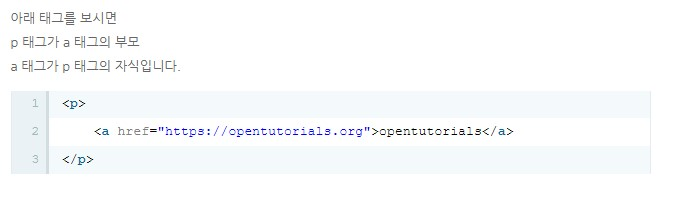

1. 태그에 대해서 배우기
이렇게 span 요소로 텍스트 일부문만 스타일을 적용할 수 있음
1) 강조하기 : strong
It's very important to pass my practicum project.
2) 밑출치기 : underline의
u
very important to pass my practicum project.
3-1) html의head :
h1부터 h4까지, 앞 뒤 빈 간격이 존재
Understanding Tag
3-2)만약 headline 대신 Strong을 쓴다면?
Understanding Tag
Let's start making webpage with open tutorial. It's very important to pass
my practicum project.
4-1) 줄바꿈 체크 :
br 닫지 않는 태그, img input hr meta 등은 닫지 않는태그의 사례
줄바꿈을 하는 이유는 단락을 표현하기 위해
Let's start making webpage with open tutorial. It's very important to pass
my practicum project.
4-2) 단락을 구분하고 표현할 때 :
paragrahp p 단, 단락 간의 간격이 고정되어 br를 선호
Hypertext Markup Language (HTML) is the standard markup language for creating web pages and web applications.Web browsers receive HTML documents from a web server or from local storage and render them into multimedia web pages. HTML describes the structure of a web page semantically and originally included cues for the appearance of the document.
HTML elements are the building blocks of HTML pages. With HTML constructs, images and other objects, such as interactive forms, may be embedded into the rendered page. It provides a means to create structured documents by denoting structural semantics for text such as headings, paragraphs, lists, links, quotes and other items. HTML elements are delineated by tags, written using angle brackets.
4-3) paragrahp를 사용하되 줄 간격을 CSS로 조정하는 방법 :
p style="margin-top:45px;
Hypertext Markup Language (HTML) is the standard markup language for creating web pages and web applications.Web browsers receive HTML documents from a web server or from local storage and render them into multimedia web pages. HTML describes the structure of a web page semantically and originally included cues for the appearance of the document.
HTML elements are the building blocks of HTML pages. With HTML constructs, images and other objects, such as interactive forms, may be embedded into the rendered page. It provides a means to create structured documents by denoting structural semantics for text such as headings, paragraphs, lists, links, quotes and other items. HTML elements are delineated by tags, written using angle brackets.
2. 속성에 대해서 배우기 : 태그의 심화된 문법
1) 이미지 삽입 :
img 그리고 속성 src
img만 넣으면 입력이 되지 않음. img src = 이미지 주소 같이 넣어야 확인가능
img 태그 만으로는 안뜨니까 src라는 속성을 추가, 속성값인 이미지 주소 추가
img(태그) src(속성)="https://s3-ap-northeast-2.amazonaws.com/opentutorials-user-file/module/3135/7648.png"(속성값)

2) 내컴퓨터에 있는 파일
html과 같은 위치에 저장 img src="zzangu.jpg"
3) 이미지의 사이즈를 조정하기 위한 속성(attribute):
width
속성 : width, 속성값 : "oo%" - 따옴표 잊지 말고 속성 값 사이에 쉼표 필요없음
4) 부모(parent)-자식(child) 관계구조
p, a

opentutorials
5) 부모 자식처럼 고정관계인 태그들 :
ul - li, ol - li
목차를 만들기 위한 태그 list 뜻하는 li 이것은 항상 ul, ol과 같이 쓴다.
6) 목차 숫자를 직접 입력할 필요 없이 ol-li로 숫자 부여
- 김임금
- 임디꿍
- 아꿍따꿍
3. 문서의 구조와 체계
head, body, title, mete
1)웹페이지의 타이틀 만들기
title
(title) 주주의 웹 스터디 (/title)
주주의 웹스터디
타이틀 태그는 검식엔진이 웹페이지 분석할 떄 가장 중요하게 생각하는 태그임
2) 영어 아닌 글자 깨질경우 :
UTF-8로 열어달라고 이야기하자
(meta charset ="utf-8")
3) 본문을 설명하는 태그 묶어두기:
head
(head)
(title) WEB1 - html(/title)
(meta charset="utf-8")
(/head)
4) head와 구분하기 위해 본문은
body안에 넣어두기
5) head와 body를 감싸는 최 상단의 태그 :
(!doctype html)
태그 계의 제왕 : Hyper Text 링크 삽입 기능 (a)
(a href = "https://www.w3.org/TR/html5/" target = "_blank" title="html5 specification")Hypertext Markup Language (HTML)(/a)
Hypertext Markup Language (HTML)